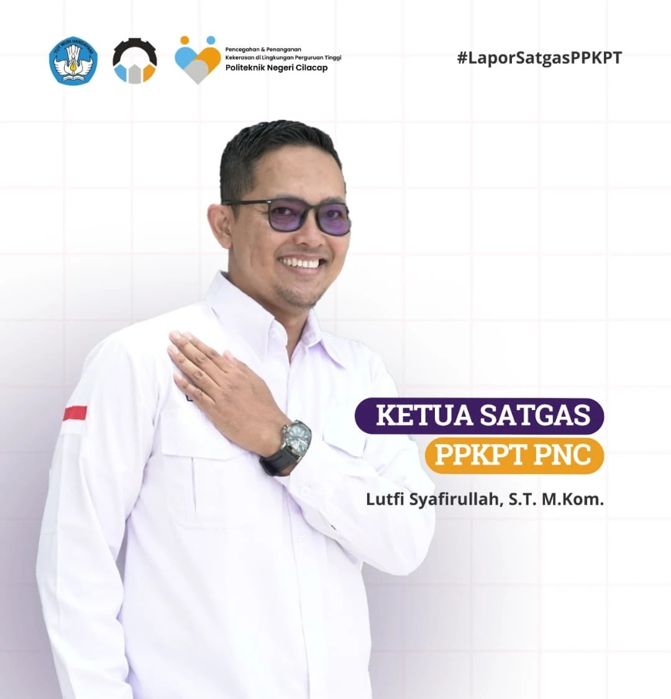

Selamat Datang di Website Satgas PPKPT Politeknik Negeri Cilacap
Website ini merupakan platform resmi dari Satuan Tugas Pencegahan dan Penanganan Kekerasan di Perguruan Tinggi (Satgas PPKPT) Politeknik Negeri Cilacap. Kami berkomitmen untuk menciptakan lingkungan kampus yang aman, inklusif, sehat, dan bebas dari segala bentuk kekerasan.

Tim Satgas PPKPT PNC 2025 siap beraksi! Bersama kita wujudkan lingkungan kampus yang aman dan nyaman. Jangan ragu untuk melaporkan segala bentuk kekerasan di lingkungan kampus melalui #LaporSatgasPPKPT